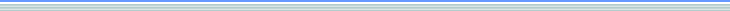

【 PowerCampusのインストール 】
PowerCampusのインストールから起動までの手順は次の通りです．
青い字のリンク部分をクリックすると各々の手順書が見れます．
下記の順番に従って
実行してください．
事前準備－1：関連ソフトウェアのインストール
(1)
Apache-2.0(ウェブサーバー)をインストールする
(2)
Postgresql-8.0(データベース)をインストールする
(3)
java-5.0とtomcat5.5(実行環境)をインストールする
Windows用ですからこれらのインストールはGUIになっておりとても簡単です．
これらのソフトがすでに導入済みの場合も、
バージョン
が同じかどうか確認してください．
PowerCampus desktop 1.0.0 は、関連ソフトウェアはここで指定したバージョンに固定されています．将来の上位バージョンであってもバージョンが異なると動作保しない可能性があります．
なお、これらのソフトウェアは、
からダウンロードできます．
事前準備－２：
環境変数を設定する
コントロールパネルで設定作業をします．少し注意が必要ですが、これも簡単な作業です．
パワーキャンパス本体をインストールする
本体は、インストーラーを使って自動インストールします．数分で完了します．
データベースを生成する
起動に先立って、必要なデータベースを、Postgresqlに付属する pgadmim ツールを使ってを生成します．生成プログラム(SQL)が用意してありますので、これを読み込んで実行するだけです．
起動
tomcat と apache を起動し、ブラウザで、
教師用：
http://《サーバー名》/pc/top/index2.html
学生用：
http://《サーバー名》/pc/top/
をアクセスすると、PowerCampusの初期画面が表示されます．

 からダウンロードできます．
からダウンロードできます．

 事前準備－２：
事前準備－２：